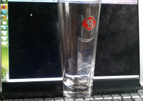
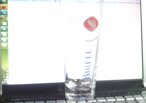

Demonstration of getting transparent pictures from camera. The picture is taken two times. First time
on white background and the second on the black background. Both pictures need to be taken from the
same camera position, with same camera settings (ISO/exposition time/focus). Simple javascript algorithm
using HTML5/Canvas feature then compares every pixel of the pictures. The transparency/alpha value is determined
by comparing the intensity levels of corresponding pixels between that two pictures.
You can see 3 images - the first one on black background, second on white and third is dynamically generated
with alpha channel. All three images are draggable.
These pictures were taken with mobile phone camera so the result is not as perfect as it could be.
Demonstracia metody ziskania transparentnych obrazkov z fotoaparatu. Priesvitny objekt
odfotime na dvoch pozadiach - na bielom a ciernom. Je nutne aby tieto obrazky boli
fotene z rovnakej polohy a pri zachovani vsetkych parametrov - iso/expozicia/ohnisko.
Algoritmus porovnava obrazok pixel po pixeli a podla rozdielu intenzity urci ci bol dany
bod priesvitny alebo nie.
Obrazky sa daju chytit mysou a posuvat. Prve dva obrazky su odfoteny
original na roznych pozadiach a treti je vygenerovany s alfa kanalom.

